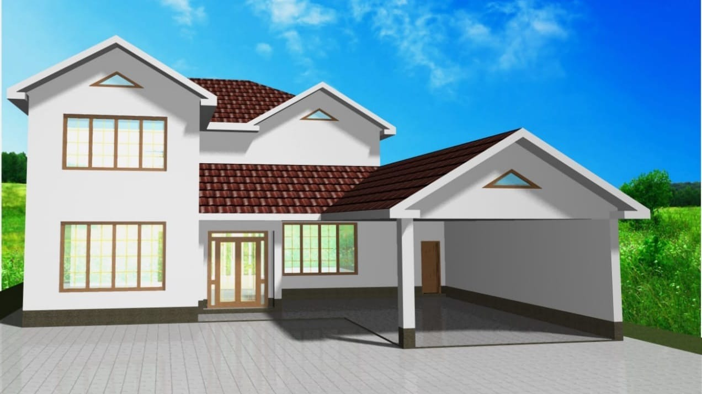
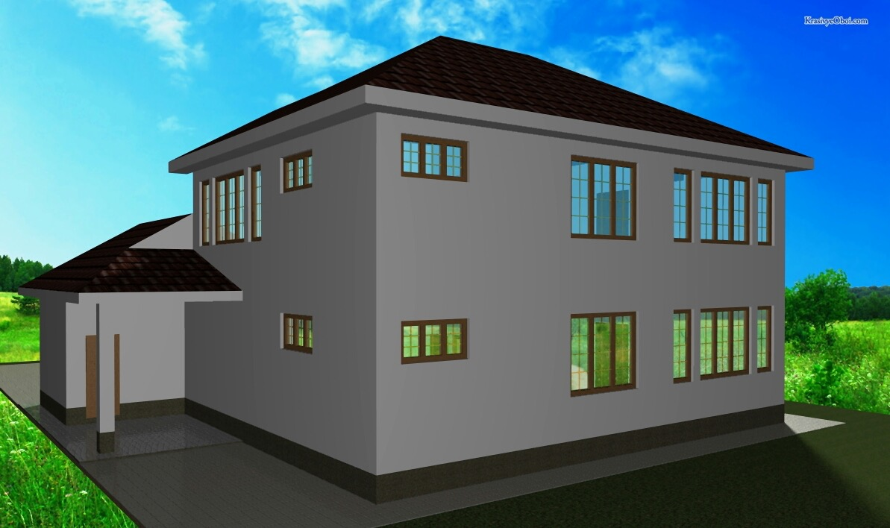
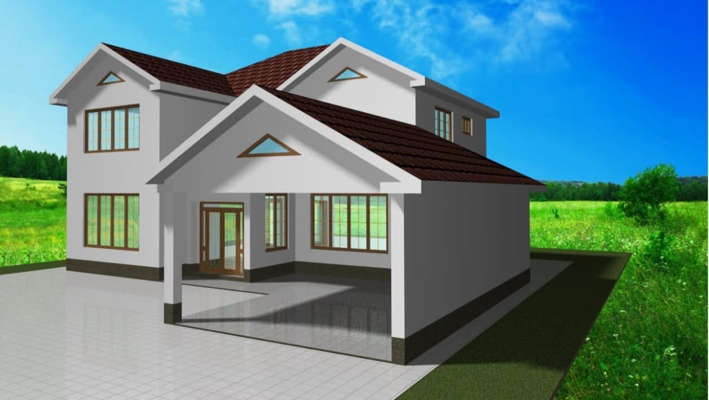
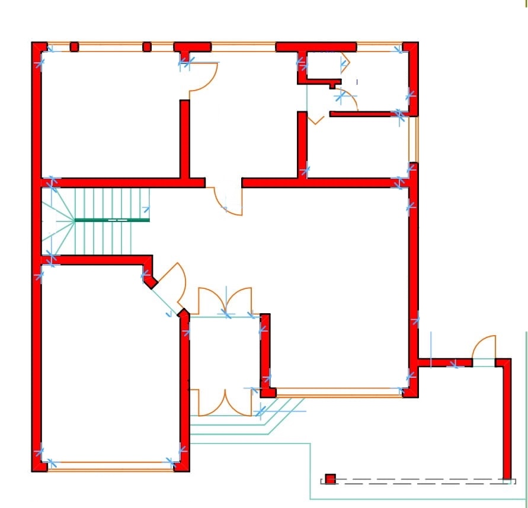
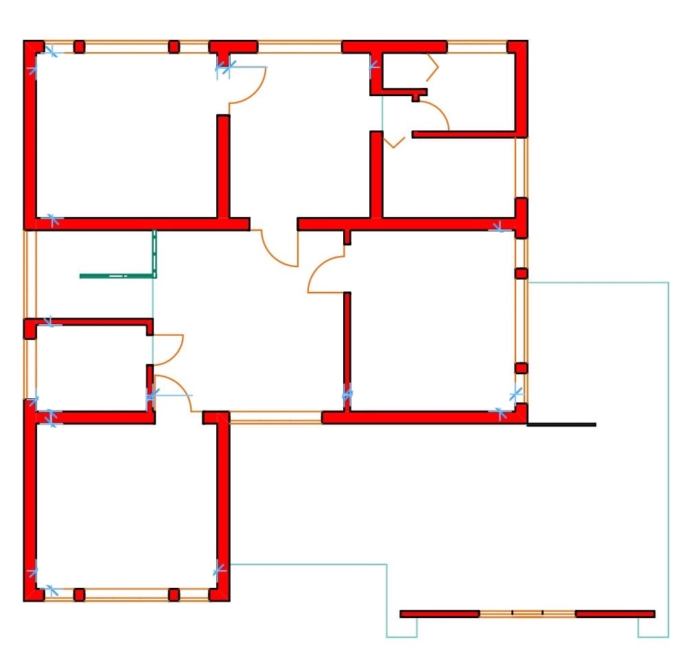
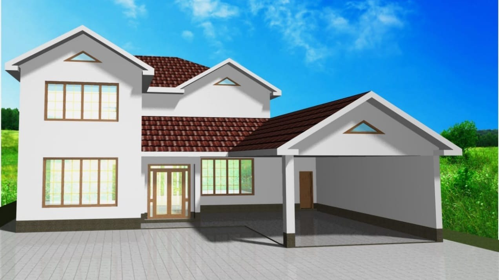
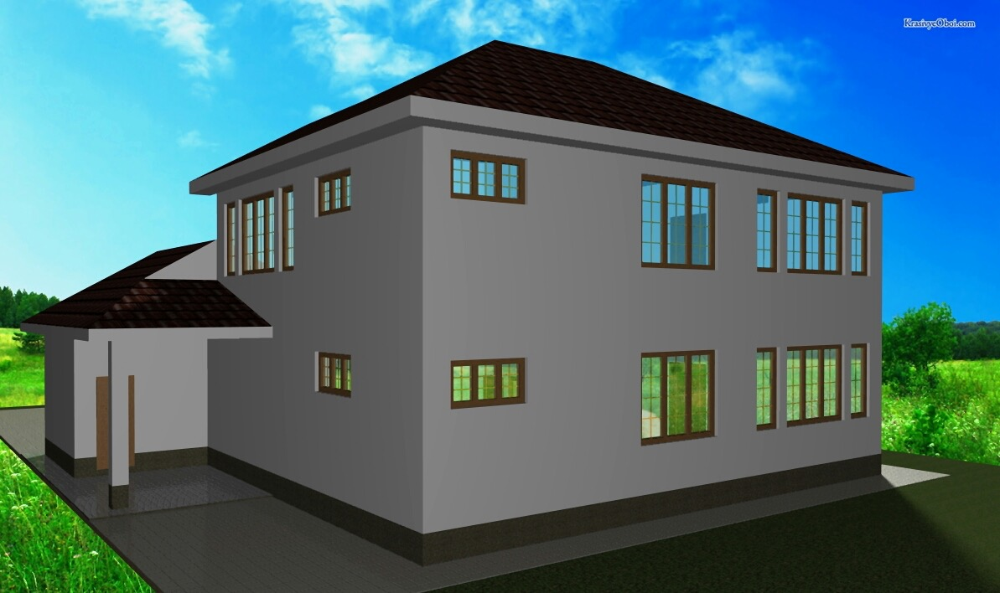
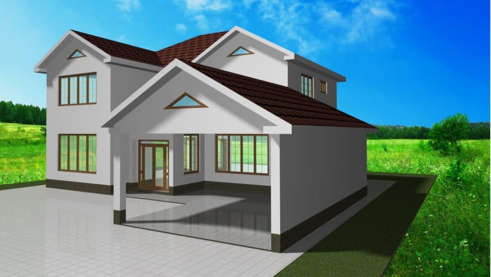
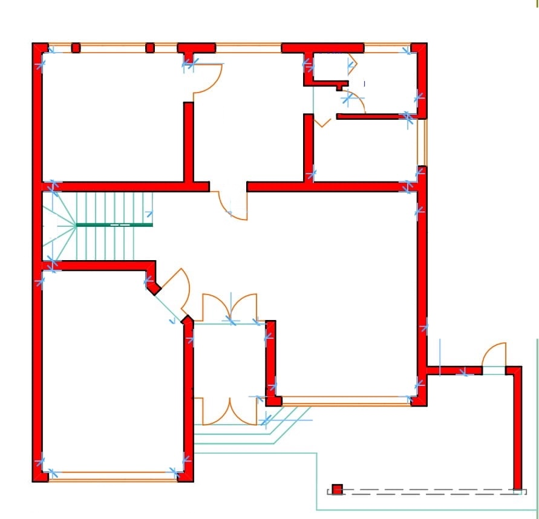
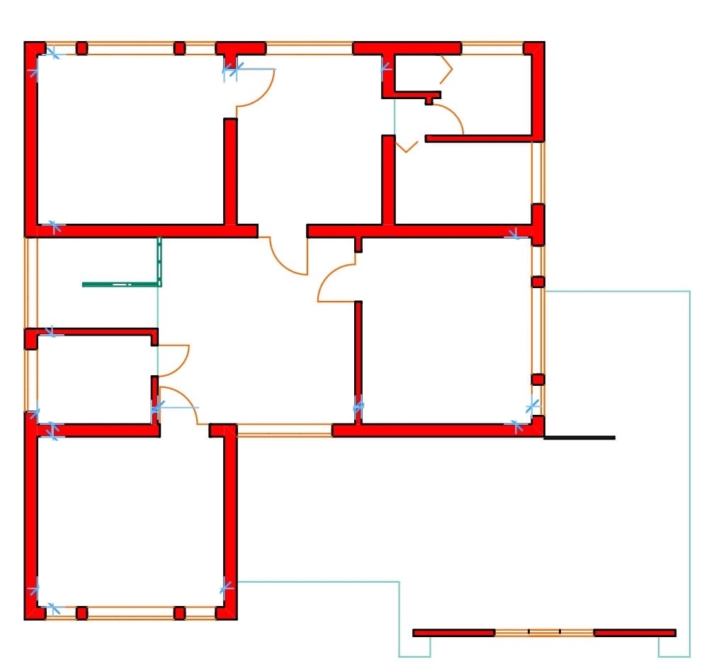

Классический семейный коттедж с кабинетом и «холодной» комнатой
Этот дом — образец практичности и традиционного уюта. Светлый фасад с лаконичным декором и коричневая черепичная крыша создают образ надежного семейного гнезда. Одной из ключевых особенностей экстерьера является большой интегрированный навес, который гармонично вписан в общую конструкцию здания, обеспечивая защиту автомобиля.
Первый этаж — Функциональность и работа: Планировка первого этажа предлагает насыщенный набор помещений для жизни и работы:
- Гостиная зона: Сердцем дома является огромный гостевой зал, пространство которого позволяет собирать большие компании. Он удобно связан с холлом и лестничным пролетом.
- Кухня и хранение: Просторная кухня-столовая изолирована от жилых комнат. Рядом с ней находится уникальное помещение — специальная «холодная комната». Это идеальное решение для хранения заготовок и продуктов, заменяющее погреб.
- Жилая и рабочая зоны: На первом уровне расположены сразу две изолированные комнаты: уютная спальня и полноценный кабинет. Такое решение отлично подойдет для тех, кто работает из дома или принимает гостей.
- Удобства: Также внизу предусмотрены ванная комната и гардеробная.
Второй этаж — Личное пространство: Второй этаж повторяет удобную структуру первого, предлагая еще больше места для семьи:
- Спальни: Здесь размещены три спальни, что позволяет выделить личную комнату каждому члену семьи.
- Второй кабинет: На этаже предусмотрен еще один кабинет, который при необходимости можно переоборудовать в четвертую спальню, игровую или библиотеку.
- Комфорт: Для удобства жильцов спроектированы две ванные комнаты и гардеробная зона.
- Холл: Просторный центральный холл объединяет все комнаты, добавляя этажу воздуха.
Почему этот проект выгоден:
- Много комнат: Всего в доме можно обустроить до 6 жилых помещений (4 спальни + 2 кабинета).
- Хранение: Наличие редкой для современных проектов «холодной комнаты».
- Удаленная работа: Идеально подходит для фрилансеров благодаря наличию кабинетов на обоих этажах.
- Навес: Практичное решение для парковки без строительства отдельного гаража.